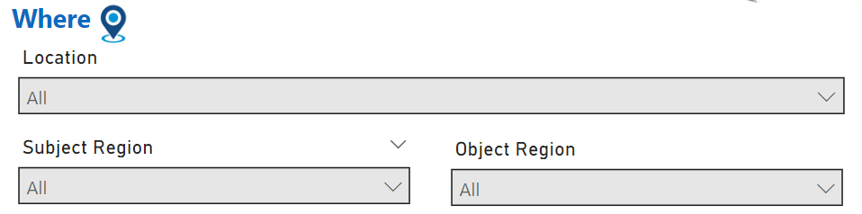

Where: Location-Based Filters

The Where section in Trender allows users to filter news articles based on geographical location. This powerful feature helps you analyze events and trends by region, country, or specific locations related to the subject or object of the action. Understanding where events occur is crucial in identifying regional patterns, conflicts, and other location-based phenomena.
Location Filters
1. Location
The Location filter shows where the event reported in the news article occurred. You can filter by continent, sub-region, or specific country.
How to use:
- Select a region from the dropdown menu (e.g., Africa, North America).
- Drill down into sub-regions or countries to refine your search (e.g., Western Europe, South America).
Example:
To focus on news articles about political events in the Westren Asia, you can select Westren Asia from the sub-region options, and only news related to this region will be displayed.
2. Subject Location
The Subject Location filter narrows down articles based on where the subject (the one performing the action) is located. This can be useful for analyzing patterns of action initiated from certain regions or countries.
How to use:
- Choose a continent or country that the subject originates from.
- This filter helps track actions based on the subject's origin rather than where the event occurred.
Example:
If you want to see actions performed by subjects from Russia, select Russia under the Subject Location filter.
3. Object Location
The Object Location filter works similarly to the Subject Location but focuses on the location of the object (the one the action is performed on). This is essential for understanding the target regions of actions or events.
How to use:
- Select a continent, region, or country for the object’s location.
- The system will display articles where the object is located in the chosen area.
Example:
If you're interested in how entities in Asia are affected by global events, use the Object Location filter to narrow down results to that region.
Combining Location Filters
The Where filters can be used individually or in combination with each other for more detailed analysis. You can filter articles by both the event location and the origin of the subject or object, allowing for more precise insights.
Example:
To investigate news about actions initiated from Europe that target entities in North America, you can: - Set the Subject Location to Europe. - Set the Object Location to North America. - The system will then show articles matching this cross-location interaction.
Use Cases
1. Regional Crisis Monitoring
By filtering news articles based on Event Location, you can monitor crisis events happening in a specific region, such as Sub-Saharan Africa, to stay updated on regional conflicts or health emergencies.
2. Cross-Border Relations
By combining the Subject Location and Object Location filters, you can analyze cross-border interactions. For example, you can examine news about diplomatic efforts initiated by countries in Europe toward entities in South America.
3. Analyzing Global Influence
Use the Subject Location filter to track actions initiated from powerful nations, like the United States or China, and study how these actions impact different regions worldwide.
Advanced Features
-
Multi-Location Selection: Trender allows you to select multiple regions or countries for both subject and object locations, enabling you to view broader trends across continents or countries.
-
Heatmap Display: For a visual representation of location-based data, Trender can display a heatmap showing where the highest concentration of news articles originates, helping identify hotspots of activity.
Examples
1. Political Events in Latin America
Set the Event Location filter to South America to focus on political developments across Latin American countries.
2. Actions by European Countries Toward Africa
Use Subject Location = Europe and Object Location = Africa to track interactions, such as diplomatic or economic actions between these two regions.
By leveraging the Where filters, users can gain a deeper understanding of geographic patterns in the news, analyze regional dynamics, and track cross-border actions in a highly customizable way.